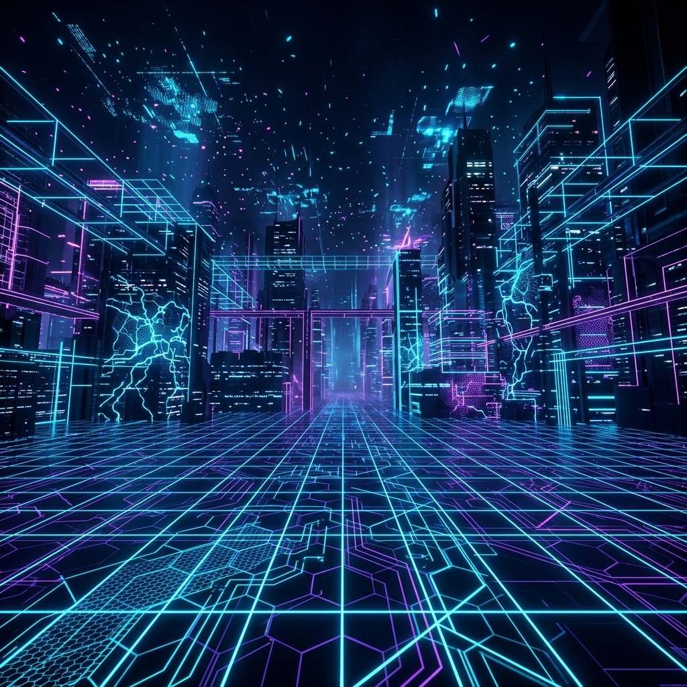
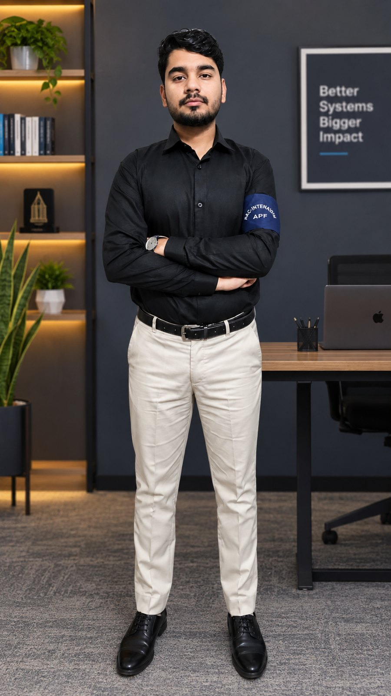
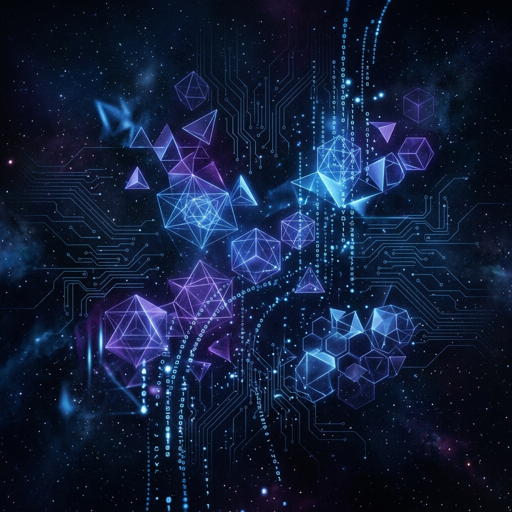
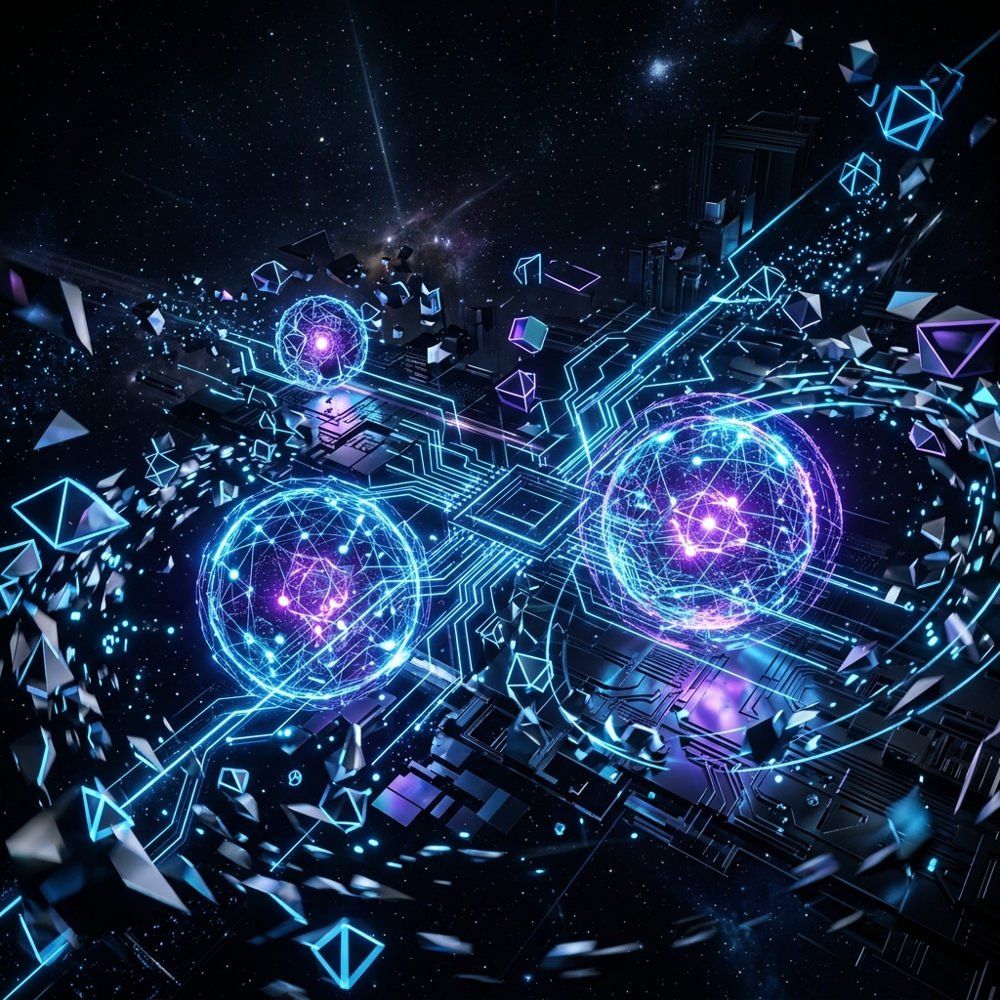

Matee ur RasoolMeladi
Final-year Electronics Engineering student building intelligent, next-generation hardware — from FPGA logic and embedded firmware to signal processing and AI models deployed on real devices.

Electronics Engineer &
AI Hardware Builder
I'm Matee ur Rasool Meladi, an Electronics Engineering undergraduate at the Islamia University of Bahawalpur (CGPA 3.83/4.00), driven to advance intelligent electronic systems and contribute to next-generation AI-powered hardware solutions.
My work spans embedded systems, FPGA design, signal processing, and power/control systems — turning raw sensor and channel data into working, real-time systems. I currently lead a research team on CSI-based Human Activity Recognition, co-authored a published paper on battery RUL prediction, and completed an engineering internship at Pakistan Aeronautical Complex (PAC), Kamra, working on avionics and radar systems.

Technical Focus Areas
The domains I'm building depth in through lab work and independent projects.
Embedded Firmware
Real-time hardware integration and testing across microcontroller- and sensor-driven systems.
- Microcontroller Programming
- Sensor Deployment & Acquisition
- Hardware Debugging
FPGA & Digital Design
Verilog HDL design, simulation, synthesis, and deployment on real FPGA hardware.
- Verilog HDL
- Xilinx ISE / Spartan-3
- RTL Simulation & Synthesis
Signal Processing
Extracting meaningful features from raw Channel State Information and sensor streams.
- CSI-Based Activity Recognition
- Filtering & Feature Extraction
- MATLAB & Python Pipelines
AI on Embedded Platforms
Training and deploying machine learning models on edge devices for real-time inference.
- Machine Learning
- Model Deployment (Raspberry Pi)
- Google Colab / Streamlit
PCB & Circuit Design
Schematic capture and layout for custom electronic boards and prototypes.
- EasyEDA / Cadence Virtuoso
- CST Studio (EM Simulation)
- Schematic & Layout Design
IoT Integration
Bridging traditional hardware with modern connected systems for automation.
- Industrial Automation (PLC–ESP32)
- Blynk / Arduino IDE
- Sensor-to-Cloud Pipelines

Technical Toolkit
Languages & ML
EDA & Hardware Tools
Systems & Deployment
Featured Projects
Academic and lab projects across embedded systems, IoT, and AI.
CSI-Based Human Activity Recognition
Collected raw Channel State Information from multiple subjects, extracted features via filtering, trained ML models, and deployed real-time recognition on a Raspberry Pi.
FPGA 3-Bit Up/Down Counter
Designed a synchronous up/down counter in Verilog, verified via simulation, then synthesized and deployed on a Xilinx Spartan-3 FPGA with LED/seven-segment output.
PLC–ESP32 Industrial Automation
Integrated a PLC Work Cell 34-120 machine with an ESP32 controller at CARE Lab, bridging traditional PLC systems with modern IoT controllers toward Industry 4.0.
Smart Adaptive Speed & Safety Control (EV)
Built an IoT-enabled system that automatically adjusts electric vehicle speed based on road and traffic conditions, improving safety and energy efficiency.
Full-Stack School Management System
Built a full-stack system for student records, fees, and payroll — React frontend, FastAPI backend, REST APIs, and secure auth with JWT and Bcrypt.
Facial Acne Severity Classification
Co-authored a hybrid attention-guided capsule framework for automated facial acne severity classification, published in Spectrum of Engineering Sciences.
Segway Self-Balancing System
Modelled a Segway inverted pendulum system and designed a feedback stability controller for balance control.
Feedback-Controlled Buck Converter Design
Designed a feedback-controlled DC-DC buck converter delivering regulated 50V–15V output using closed-loop control.
AI Smart Environment & Mood Automation System
Built an AI-enabled environmental monitoring system with PIR/MQ-2 sensors, anomaly detection (Z-Score, EMA), and adaptive learning over Wi-Fi.
Education & Research
BS in Electronics Engineering
CGPA 3.83/4.0. Coursework in Digital System Design, DSP, AI, Computer Architecture, Embedded Systems, EM Theory, and Power Electronics.
CARE Lab
Real-time hardware integration and testing, microcontroller troubleshooting, and hardware projects combining electronics, programming, and automation.
Deep Embedded Lab
Intensive AI training program — machine learning, deep learning, and neural network implementation on embedded platforms.
CSI-Based Human Activity Recognition
Led the CSI-HAR research group — data preprocessing, ML/DL modeling, and real-time deployment on Raspberry Pi 4 using WiFi Channel State Information.
Engineering Intern
Studied avionics, radar systems, PCB testing, electronic fault diagnosis, and aircraft communication interfaces.
Biomedical Instrumentation & PID Control
Applied signal processing, PID control, feature extraction, and AI integration in a biomedical instrumentation context.
Engineering & Product Design / AI for Everyone
Completed "Engineering and Product Design" (ASU) and "AI for Everyone" (DeepLearning.AI).
Publications & Achievements
Achievements
- Honhaar Scholarship — merit-based scholarship in recognition of academic performance.
- PM's Laptop Scheme — selected among 100,000 meritorious students nationwide on 100% merit.
- Team Leader, CSI-HAR — led team coordination, data collection, and signal processing research.
- Published Researcher — battery RUL prediction using PSO and hybrid ML approaches.
Let's Start a Conversation
Open to research collaborations, internships, and interesting problems in embedded AI and signal processing.